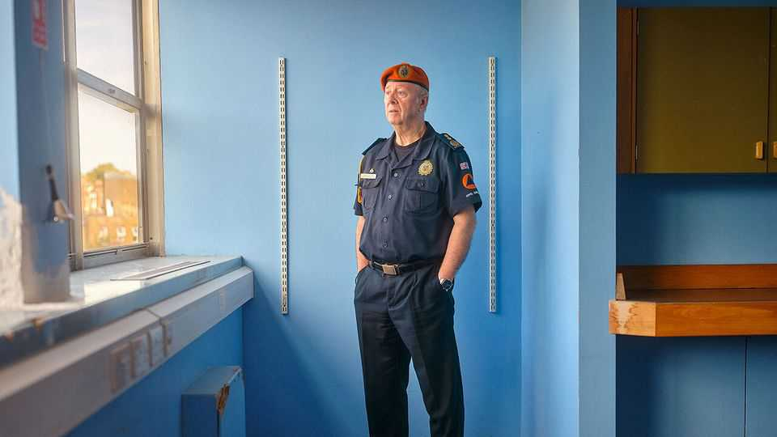
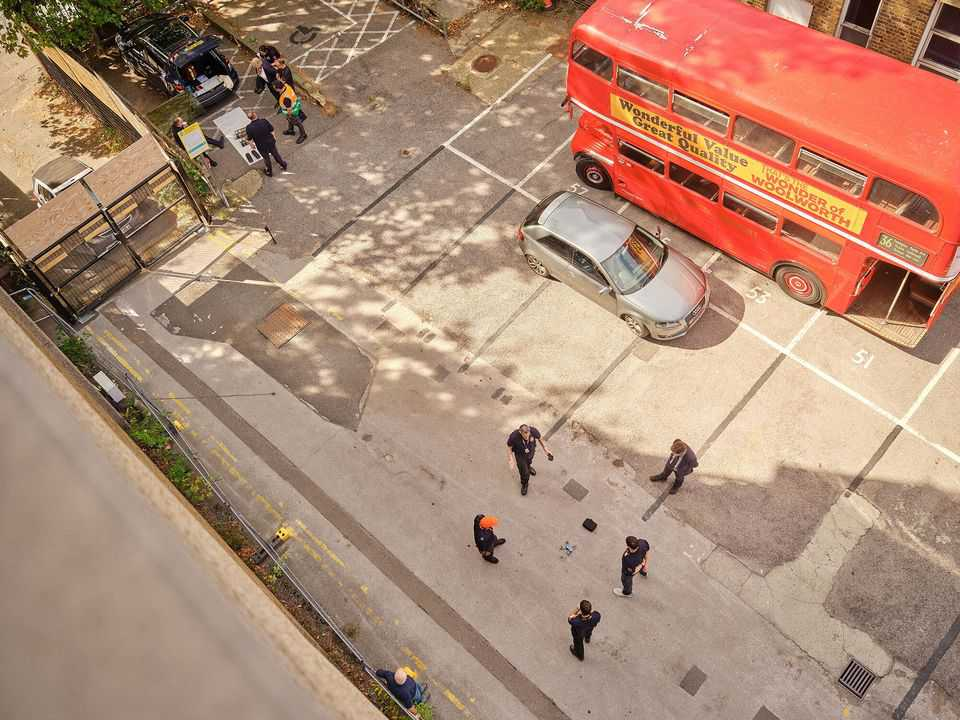
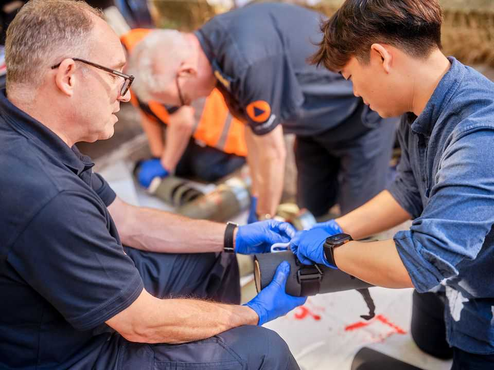
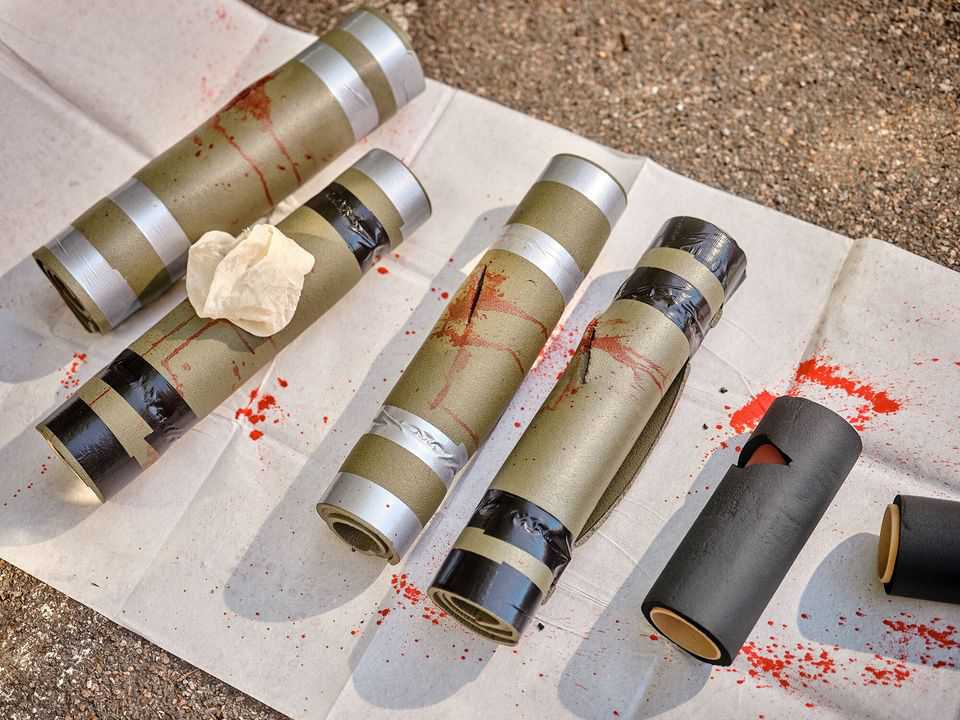
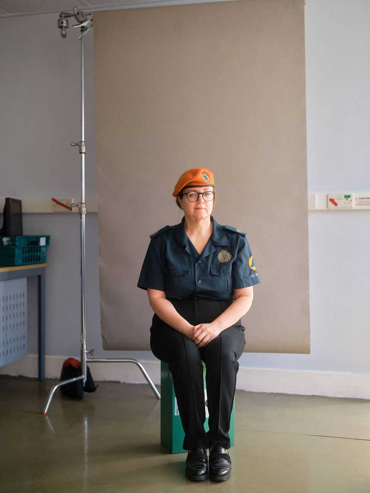
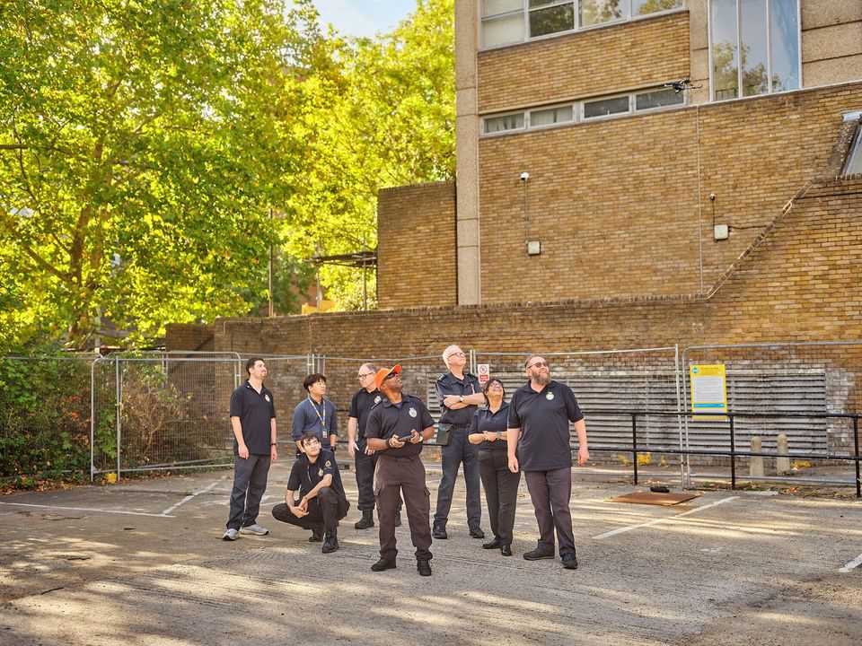

Britain’s new Dad’s Army
The government wants its citizens to prepare for crises

Oct 15th 2026
AT A DISUSED hospital in north London, Colin Harmsworth puts his army through their paces. Clad in orange berets, they learn how to strap tourniquets to bleeding limbs and operate drones. Mr Harmsworth founded the Joint Civil Aid Corps to help Britain’s emergency services during a national crisis. Its members, he says, must be uniformed and disciplined: when duty calls, it’s no good turning up in jeans and arguing.
On paper the vision is sprawling, the product of 14 years of deliberations. Mr Harmsworth, a former cavalry soldier, took inspiration from the Civil Defence Corps, which in the cold war was tasked with digging Britons out of whatever remained of bombed cities. He imagines a force of more than 80,000 volunteers, spanning the country, and a budget north of £180m ($240m). There would be roles for medics, quartermasters, meteorologists and a drum corps. For now, however, volunteers number in the low hundreds and must buy their own uniforms. Mr Harmsworth, the “commandant”, is on the hunt for a philanthropist to make his dream reality.
His beret-wearers, meanwhile, are the British state in microcosm. Once dismissed as an eccentric pursuit, the task of galvanising Britons for “whole-of-society” responses to crises now preoccupies Whitehall. Like Mr Harmsworth, officials are adept at producing long policy papers but short of cash. Whether the state is in better shape for a crisis than the Joint Civil Aid Corps remains unclear.

Government ministers are planning a flurry of “big-muscle moves” on the topic. A public-information campaign will soon encourage Britons to stockpile food, water, torches and radios in preparation for emergencies such as bad weather. Similar measures already abound in other European countries, but a government survey found that 32% of Britons have supplies for only a day or less. Next year hundreds of officials and ministers will take part in Exercise Albiston Shadow, a war game to test the state’s reaction to hybrid attacks by a hostile power. The home-defence “war books”, as classified plans are known, are being updated for the first time since 2004.
Ministers are also preparing the Defence Readiness Bill, with provisions for mobilising armed-forces reserves and industries in a crisis. An emergency communications channel, the Resilient Voice System, is being upgraded. ThinkLabour, a think-tank with close government ties, proposes a volunteer National Resilience Corps that resembles groups in the Nordic states (and Mr Harmsworth’s vision).
One threat such measures must guard against is conflict. Sir Keir Starmer, the previous prime minister, warned in the spring that Britain might be at war with a rearmed Russia by 2030. Last week in Berlin Andy Burnham, Sir Keir’s successor, said sabotage and cyber-attacks by hostile states were growing more frequent. The government thinks Iran was behind what seemed to be an attempted attack on RAF Fairford, an airbase in Gloucestershire.


Officials must also plan for natural disasters such as pandemics, floods and wildfires. And Britain’s shoddy infrastructure might give way, too. In the 2026 edition of the National Risk Register, officials updated the odds of a whole region losing its water supply from below 1% to 5-25%. The impact, they said, would be “catastrophic”.
The catastrophising was long overdue. Britain’s state used to fear citizens would scorn advice on how to meet disaster. The ridiculing of the cold-war-era “Protect and Survive” information campaign is still remembered in Whitehall, says Toby Harris of the National Preparedness Commission, a non-profit venture.
Now there has been a “sea change in mentality, at least in the Cabinet Office”, says Elizabeth Braw of the Atlantic Council, another think-tank. During the covid-19 pandemic Britons followed lockdown rules surprisingly strictly; 500,000 signed up to volunteer within 24 hours. A survey found that 84% wanted the state to tell them how to prepare for crises.

Are its plans now sound? One problem is that Britain often uses its armed forces for civilian problems such as security at the Olympic games, wildfires and public-sector strikes. In a conflict, though, all available troops might be engaged in fighting, says Ed Arnold of RUSI, yet another think-tank. And so while the state can respond well to one crisis, it is bad at planning for several occurring at once. Moreover, a “whole-of-society” plan is not much help if society does not know what it is. And here, as in so much else, Britain’s state displays a pathological inclination to secrecy.
Occasional glimpses behind the curtain are not reassuring. Consider preparations at the Department for Environment, Food and Rural Affairs (DEFRA) for interruptions to food supplies. Officials fear supply chains are vulnerable—to cyber-attacks on the power grid, for instance. Food is designated one of 13 “critical national infrastructure” sectors. But Defra has “very little confidence” that cross-government governance of such sectors is joined up, and a database of relevant businesses and sites is yet to cover the food industry.
Businesses, meanwhile, have not seen the “playbook” Defra has drawn up for a food crisis. The National Audit Office has observed, drily, that this means the “plans may not work in practice”. The industry has not been invited to Whitehall’s crisis exercises. Nor have Local Resilience Forums, the provincial bodies meant to manage crises, been told what to do when the supermarket shelves are bare.
Money is part of the problem. Ministers boast that Britain will next year hit a new NATO target of spending 1.5% of GDP on “resilience”. Yet it will not spend a penny more than originally planned. Defra officials deemed the cost of a full emergency food plan too steep, opting for a “minimum viable product”. Money frustrates Mr Harmsworth, too. “In my heart of hearts, I know I can make it work,” he says. But only “if I have sufficient funding to do it.” ■
